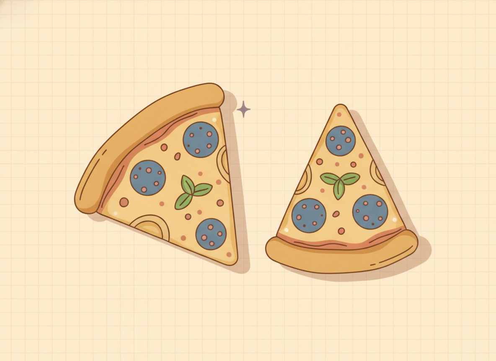

Fraction refresher

Fractions turn up all through the units ahead, in slope and rates and proportions, so it's worth getting steady with them before you solve equations that contain them. Many adults stalled on fractions years ago. If that's you, nothing here is out of reach. This lesson rebuilds fractions from the ground up, one piece at a time.
Here's the plan. First, what a fraction actually is: one number, with one spot on the number line. Then how to rename a fraction without changing its value, and how to shrink it to lowest terms. Then the four operations, adding through dividing. Last comes the reciprocal, the flipped fraction the next lesson uses to undo a fraction sitting on x. Each part leans on the one before it.
If fractions already feel solid, move through this quickly. A good way to test yourself: glance at (2/3)x = 6. If you know how to start, skim. If you hesitate, this is the ground to walk slowly.
Part 1: What a fraction is
A fraction is one number, not two numbers stacked up. Write 3/4 and you've named a single amount. The top number is the 2.5.d1 numerator, and it counts how many pieces you have. The bottom number is the 2.5.d2 denominator, and it says how many equal pieces make one whole. So 3/4 is three of the four equal pieces that fill a whole.
The clearest place to see a fraction is the number line. To find 3/4, take the stretch from 0 to 1, cut it into 4 equal steps, and count 3 steps from 0. That single point is 3/4. Holding a fraction as a location, rather than as two numbers stacked, is the habit that keeps the rest of this lesson from feeling slippery.
The denominator can fool you: a bigger bottom number means a smaller piece. Cut one pizza among 6 people instead of 4 and every slice is smaller, so 1/6 is less than 1/4 even though 6 is the bigger number. More splits, smaller pieces.

The numerator can be larger than the denominator. 2.5.d3 An improper fraction like 7/4 just means 7 quarter-steps, which carry you past 1; it lands at the same place as 1 and 3/4. 2.5.d4 Writing it as 1 3/4 makes it a mixed number. Both names point to the same spot on the line.
One thing to settle now, because it trips up many returning students: a fraction is a finished number. 3/4 is every bit as complete an answer as 0.75, and 1/3 is cleaner left alone than turned into 0.3333… You only convert a fraction to a decimal when a problem asks you to.
Check yourself
- 2.5.c1 Without dividing it out, where does 9/8 sit: just under 1, exactly 1, or just past 1? How can you tell? (Just past 1: 8/8 is one whole, and 9/8 is one more eighth beyond it.)
Read the fraction:
Reveal answerHide to problem 1
8; the whole is cut into 8 equal piecesReveal answerHide to problem 2
1/3Reveal answerHide to problem 3
3/4Reveal answerHide to problem 4
equal to 1Place and rename:
Reveal answerHide to problem 5
more than 1, at 1 and 1/4Reveal answerHide to problem 6
1 3/4Reveal answerHide to problem 7
7/3Reveal answerHide to problem 8
false; a fraction is a finished numberPart 2: Equivalent fractions and lowest terms
The same point on the line can wear more than one name. Cut each of the 4 pieces of 3/4 in half and you have 8 smaller pieces with 6 of them shaded, but the shaded length hasn't moved. So 3/4 and 6/8 are 2.5.d5 equivalent fractions: different names for one amount.
The rule behind every equivalent fraction is short: multiply or divide the top and the bottom by the same number. You're really multiplying by a disguised 1, like 2/2 or 5/5, and multiplying by 1 changes a number's name, not its size. $$\frac34 = \frac{3\times 2}{4\times 2} = \frac68 \qquad \frac34 = \frac{3\times 5}{4\times 5} = \frac{15}{20}$$
Running that rule backward is how you reduce a fraction. 2.5.d6 A fraction is in lowest terms when the top and bottom share no common factor except 1, so there's nothing left to divide out. To get there, divide the top and bottom by their 2.5.d7 greatest common divisor (GCD), the biggest number that goes into both evenly.
Take 12/18. The GCD of 12 and 18 is 6, so divide both by 6: $$\frac{12}{18} = \frac{12\div 6}{18\div 6} = \frac23$$ And 2/3 is as far as it goes, because 2 and 3 share no factor but 1. If you don't spot the GCD right away, that's fine. Divide by any common factor you do see and repeat: 12/18 → (÷2) → 6/9 → (÷3) → 2/3. Same destination, just in smaller steps.
Comparing two fractions leans on this same renaming. To see whether 2/3 or 3/4 is larger, give them a common denominator and compare the counts of pieces: $$\frac23 = \frac{8}{12}, \quad \frac34 = \frac{9}{12} \;\Rightarrow\; \frac23 < \frac34$$ A benchmark check is often faster: 5/8 is more than 1/2 (which is 4/8), and 3/8 is less than 1/2, so 5/8 is the larger of those two with no renaming at all.
Check yourself
- 2.5.c2 Reduce 24/36 to lowest terms, and say how you know you can't reduce it any further. (Divide top and bottom by the GCD, 12: 24/36 = 2/3. It's done because 2 and 3 share no common factor but 1.)
Write an equivalent fraction:
Reveal answerHide to problem 1
8/12Reveal answerHide to problem 2
6/10Reduce to lowest terms:
Reveal answerHide to problem 3
3/4Reveal answerHide to problem 4
2/3Reveal answerHide to problem 5
2/5Reveal answerHide to problem 6
3/8Reveal answerHide to problem 7
2/3Reveal answerHide to problem 8
3/4Compare with <, >, or =:
Reveal answerHide to problem 9
2/3 < 3/4Reveal answerHide to problem 10
5/8 > 1/2Part 3: Adding and subtracting
The one rule under all fraction addition is that you can only add same-sized pieces. Thirds and quarters aren't the same size, so you can't add them as they sit. You first rename both as a common size, then add the numerators, which are the counts of pieces. And you can never add straight across the top and bottom: 1/2 + 1/3 is not 2/5.
To find a common denominator, you have two routes:
- Bulletproof: multiply the denominators (4 and 6 → 24). This always works, though the answer may need reducing.
- Cleaner: use the LCM (least common multiple) of the denominators (4 and 6 → 12), which keeps the numbers smaller.
Both routes land in the same place. Here is 3/4 + 1/6 worked each way: $$\begin{aligned} &\frac34+\frac16:\quad \text{LCM}=12,\quad \frac34=\frac{9}{12},\ \frac16=\frac{2}{12} \\ &\Rightarrow\; \frac{9}{12}+\frac{2}{12}=\frac{11}{12} \end{aligned}$$ $$\begin{aligned} &\frac34+\frac16:\quad 4\times 6=24,\quad \frac34=\frac{18}{24},\ \frac16=\frac{4}{24} \\ &\Rightarrow\; \frac{18}{24}+\frac{4}{24}=\frac{22}{24}=\frac{11}{12} \end{aligned}$$ The LCM route gets you straight to 11/12. The product route makes bigger numbers and one extra reducing step at the end, but it never fails you when the LCM is hard to spot.
A quick self-check on any fraction answer: picture roughly where it sits between the nearest whole numbers and ask whether its size makes sense. 11/12 is just under 1, which fits adding two parts that are each less than a whole.
Add or subtract, then reduce:
Reveal answerHide to problem 1
3/4Reveal answerHide to problem 2
1/2Reveal answerHide to problem 3
3/4Reveal answerHide to problem 4
11/12Reveal answerHide to problem 5
1/4Reveal answerHide to problem 6
1/2Reveal answerHide to problem 7
7/10Reveal answerHide to problem 8
5/8Reveal answerHide to problem 9
1/2Reveal answerHide to problem 10
1Part 4: Multiplying and dividing
Multiplying is the one operation that does not need a common denominator. You multiply straight across, top times top and bottom times bottom, then reduce. Picture it as area: to find 1/2 × 2/3, shade 1/2 of a square going across and 2/3 of it going down. The part where the two shadings overlap is the answer.
$$\frac12 \times \frac23 = \frac{1\times 2}{2\times 3} = \frac{2}{6} = \frac13$$ Notice the result, 1/3, is smaller than either fraction you started with. That feels wrong until you read the × as "of": 1/2 × 2/3 is "half of two-thirds," and half of something is less than the whole of it. Multiplying by a number below 1 shrinks things.
Dividing is multiplying in disguise. Ask what 3/4 ÷ 1/2 is really asking: how many halves fit into 3/4? A half is 2/4, and 3/4 holds one and a half of those, so the answer is 3/2. You reach it every time by flipping the second fraction and multiplying. That flipped fraction is its reciprocal, which the next part looks at closely: $$\frac34 \div \frac12 = \frac34 \times \frac21 = \frac{6}{4} = \frac32$$ Flip the divisor, never the first fraction, and the division turns into a multiplication you already know how to do.
Check yourself
- 2.5.c3 The division (3/4) ÷ (1/4) asks how many quarter-steps fit in 3/4. Answer it first by picturing the steps, then by multiplying by the reciprocal, and check the two agree. (Three quarter-steps fit, so 3. By reciprocal: 3/4 × 4/1 = 12/4 = 3. Both give 3.)
Multiply, then reduce:
Reveal answerHide to problem 1
1/3Reveal answerHide to problem 2
1/2Reveal answerHide to problem 3
1/2Reveal answerHide to problem 4
1/6Reveal answerHide to problem 5
4/7Divide (flip the second fraction, then multiply):
Reveal answerHide to problem 6
2Reveal answerHide to problem 7
3/2Reveal answerHide to problem 8
3/2Reveal answerHide to problem 9
2Reveal answerHide to problem 10
1/2Part 5: Reciprocals, and solving (2/3)x = 6
The 2.5.d8 reciprocal of a fraction is the fraction flipped over, and any nonzero number times its reciprocal goes to one: 2/3 × 3/2 = 1. A whole number counts as itself "over 1," so its reciprocal flips too: 5 is 5/1, and its reciprocal is 1/5.
Here's why this matters for solving. To undo multiplication by a fraction, you multiply by its reciprocal. That's the inverse operation for a fraction coefficient, the same idea as dividing to undo a whole-number coefficient. So (2/3)x = 6 is solved by multiplying both sides by 3/2: $$\begin{aligned} &\frac23 x = 6 \\ &\xrightarrow{\,\times \frac32\,}\; x = 6\cdot\frac32 = 9 \\ &\text{Check: } \frac23(9)=6 \end{aligned}$$ The 2/3 times 3/2 goes to one, leaving x by itself, and 6 times 3/2 is 9. The check puts it back: two-thirds of 9 is 6.
Name the reciprocal:
Reveal answerHide to problem 1
8/5Reveal answerHide to problem 2
9Reveal answerHide to problem 3
1/6Reveal answerHide to problem 4
4/11Solve using a reciprocal:
Reveal answerHide to problem 5
14Reveal answerHide to problem 6
10Reveal answerHide to problem 7
8Reveal answerHide to problem 8
15Reveal answerHide to problem 9
6Reveal answerHide to problem 10
6You've now rebuilt the whole toolkit: what a fraction is, how to rename and reduce it, and how to add, subtract, multiply, divide, and flip it. The next lesson puts the last ideas to work, using the reciprocal and the common denominator to solve equations that have fractions in them.